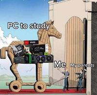

0

An anonymous reader quotes a report from Reuters: While global tech stocks teeter, in China they have already crashed as lofty valuations collapse under worries about AI demand and curbs on Chinese exports. The meltdown, tanking the mainland STAR50 index of AI and semiconductor leaders by 40% in less than four months and vaporizing some $480 billion in market value, is an ill omen for wobbly world markets and a dampener on China's efforts at encouraging its savers into stocks to fund the AI boom. It has also slammed the brakes on a rally running two years, since economic stimulus promises sent shares soaring, and has stalled Beijing's push to break with a long boom-bust pattern and drive a "slow bull" market that delivers reliable performance. China's broad blue-chip index has dropped about 20% from highs made in June. "The stock market later evolved into a speculative crazy bull," said Beijing-based fund manager Dong Baozhen. "And now we see the bubble bursting." There was no clear trigger for the selloff in China, though traders pointed to high valuations, tax bills, and the threat of foreign bans on Chinese data center equipment. According to Goldman Sachs, AI stocks account for 42% of China's market capitalization and 57% of trading turnover, leaving investors widely exposed to the downturn.
"What's happening is now going to put a stop for many of the companies trying to get themselves listed," said Hong Hao, managing partner and chief investment officer at Lotus Asset Management in Hong Kong.
"Overemphasising the 'technology content' -- that is, the weighting of tech companies by market value in major indexes -- leads to a deviation, even a distortion, in capital behavior," said Leo Wang, partner at Beijing-based Qianchuang Capital. "This created a severe bubble in certain sectors and a serious drain on others."
"Just like all other Chinese manufacturers, (chipmakers and AI suppliers) will eventually end up in a price war," said fund manager Wang Zhuo, partner at Shanghai Zhuozhu Investment Management. "There's no exception," he said. "All bubbles inevitably burst."
Read more of this story at Slashdot.
Susanne Rust of the Los Angeles Times reports (paywalled) that industry executives knew for decades that microplastics were infiltrating the human body. Slashdot reader joshuark shares an excerpt from the report: Scientists today say we're just beginning to understand the harm that the tiny bits of plastic we drink, eat and breathe are doing to the human body. Internal memos among company scientists and executives obtained by The Times reveal that for at least half a century, the plastics industry has been aware of and concerned about the potential for microplastic contamination in the human body. But recently discovered chemical company documents dating back several decades show that industry scientists have long been aware of -- and concerned about -- the way microplastic particles migrate beyond the gut in animals and humans, depositing in important organs. And the potential for that knowledge to affect the plastic food packaging industry.
Their concern goes back to 1974 and a scientific meeting at a New York City hotel, where a German gastroenterologist presented a scientific paper that showed for the first time that ingested particles like microplastics could infiltrate the rest of the body. His presentation was largely overlooked by the government scientists in attendance but became a point of worried discussion among company scientists. Tracey Woodruff, professor of epidemiology and population health at Stanford University, who reviewed the documents, said they indicate scientists and executives at major chemical companies have known and remained silent even as microplastics accumulated in tissues. She likened it to other industries that knew about pollutants -- greenhouse gases, asbestos and tobacco -- but did not take action to make them safer.
A spokesperson with the chemical industry's largest trade group took issue with that characterization. "Scientific debate over what the evidence shows is not silence. It is how sound science and effective policy advance," said Craig Davis, senior director of plastics chemistry at the American Chemistry Council. "Our industry is committed to advancing microplastics science by supporting independent research and policies that would do so."
Read more of this story at Slashdot.
An anonymous reader quotes a report from the Associated Press: The U.S. designated helium as a critical material on Friday because it's indispensable for making semiconductors that are essential to energy generation, and the global supply is at risk of disruption, according to the Energy Department. The designation by the Energy Department means that more federal financing will be available for helium producers and that the government will monitor it more closely. Helium is primarily produced as a byproduct of natural gas processing. The United States is the world's largest producer of natural gas and of helium. Qatar and Russia are the other top helium producers.
[...] Helium makes balloons rise, but that's not why the DOE is interested in it. Helium plays an important role in wind, solar and nuclear energy production, space exploration, medical imaging and research. Assistant Secretary of Energy Audrey Robertson said helium's unique properties make it irreplaceable, such as the fact that it's non-combustible and has the lowest boiling point of any gas. The nation needs an ample supply for semiconductors, quantum and super computing, and superconducting magnets, added Robertson, who oversees the Office of Critical Minerals and Energy Innovation.
[...] Despite environmental concerns with recovering helium from natural gas, there are also opportunities, said Greeshma Gadikota, director of the Lenfast Center for Sustainable Energy at Columbia University. "If we burn the natural gas, there are a lot of CO2 emissions associated with that," Gadikota said. "But if you just extract the helium and use it, the uses of it don't contribute necessarily to greenhouse gas emissions. "So from a climate standpoint, if we are going to continue down the line of extracting natural gas and recovering helium," she added, "I would prefer to see natural gas being used in a form where we directly produce hydrogen and we produce solid carbon." Hydrogen is a clean burning fuel, and solid carbon can provide permanent carbon sequestration and can be used widely in industrial applications, including rubber and pigments.
Read more of this story at Slashdot.
The critical PHP2Shell vulnerabilities (CVE-2026-109618 and CVE-2026-109619) have now been successfully exploited in the wild, just days after patches were released and initial exploitation attempts failed. BleepingComputer reports: The malicious activity was caught by Adel Karimi, detection and response lead at Perplexity, whose honeypots recorded evidence of confirmed remote code execution against an Apache mod_php installation running PHP 8.4.26. "This is now confirmed RCE with usable memory disclosure, not just a crash followed by a suspicious process. The response delivered an 800 KiB decoded cookie dump, and a function address derived from that dump using the public exploit's offsets appears in the subsequent execution payload," Karimi shared.
"The evidence demonstrates this chain on the intentionally favorable single-worker mod_php profile; it is not a measurement of exploit reliability on other worker counts, PHP builds, or applications," he added. Karimi's findings were also confirmed by Expel threat researcher Marcus Hutchins, who has been tracking a stream of alleged successful PHP2Shell exploitation reports.
"This is by far the highest quality confirmation of in-the-wild php2shell exploitation I've seen so far. Deep technical breakdown of a successful exploitation attempt against an Apache mod_php installation running PHP 8.4.26," Hutchins said.
Read more of this story at Slashdot.
Instagram is testing a new longform, horizontal video format called "Features" as it pushes further into YouTube territory and expands its presence on TVs. The Verge reports: Instagram boss Adam Mosseri has been against doing longform video on the platform "for a long time," he says in a six-and-a-half-minute video (here's the widescreen version) with VP of product Tessa Lyons, saying that "one of my concerns has been, how do we make sure that we keep Instagram not just about entertainment, but about connecting with friends." If you watch a longform video, "it's a lot of Reels, photos, and carousels that you might not have sent to a friend," meaning less likes and shares. Now, though, the team is working on making shortform and longform video "symbiotic," according to Mosseri, like podcasts or comedy specials that can be both long videos and broken up into shorter ones.
The announcement of this widescreen video push also follows the launch of Instagram's TV app late last year. That app launched first as a Reels-focused experience and as a pilot for Amazon Fire TV devices in the US, but it's since expanded to Google TVs, Samsung TVs and Apple TV, and Instagram launched new features like the ability to watch Stories earlier this year.
Read more of this story at Slashdot.
Anthropic has filed to go public on the Nasdaq under the ticker ANT, setting the stage for a potentially record-setting IPO that could value the Claude developer at more than $2 trillion. Alongside the extraordinary cost of its AI expansion, Anthropic warned that it "may not generate sufficient revenue to achieve or sustain profitability in the future."
"While we have experienced significant revenue growth in recent periods, our business is highly capital intensive," the company said. "Our revenue growth may not be sustainable, and our rate of growth may decrease." NBC News reports: The filing did not include a potential share price, the number of shares to be offered or a valuation for the whole company, all of which will be determined after Anthropic holds a "road show" with investors, prospective investors and its bankers. [...] The company plans to spend at least $110 billion with Amazon for cloud services through April 2036 and another $120 billion with SpaceX through 2029. Anthropic also said it planned to spend $115 billion with Google and $45 billion with Microsoft, both through 2033, for computing infrastructure.
The filing said that the company recorded revenue growth of "1,368% year over year for the three months ended June 30, 2026." The cost of renting servers and chips grew by 300% over the same period. Anthropic's net loss for the first six months of 2026 was $80.7 billion. For the entirety of 2025, the company reported a $42 billion net loss.
Anthropic added that it expects its current cash and sales to be sufficient for the next 12 months but warned that future revenue growth depends on a number of important factors, including the cost of infrastructure. As a result, it said, "we may be required to seek additional financing sooner than we currently anticipate." The company said it has raised about $141 billion of capital through the end of June and is sitting on $112.4 billion of cash.
Read more of this story at Slashdot.
0
Kotaku reports:
r/opensource, Reddit's primary "subreddit for everything open source related," has banned all AI-assisted and AI-related projects.... As reported by The Verge, the subreddit's October 24 post, titled "Your tokens aren't valuable: No more AI," features four new main rules: all projects must now be at least "1 year old," have "multiple contributors," be posted by someone who must "speak English," and cannot be "made by" or "intended for" AI... [T]he ban on AI is simple; as the subreddit's moderators explain, "AI, as it exists today, is incongruent to this Open Source community." Unsurprisingly, this is the part that's upset the majority of the users in the thread....
[T]he moderator who posted the new guidelines stated in a separate comment that the overwhelmingly negative response is due to "some guy on twitter claiming to be alternative news" who posted an "opinionated editorial pointing hundreds of people to the thread." Given the timing of when the thread was posted, alongside the fact that the X post in question mentions "the Linux kernel," they are presumably referring to this post by The Lunduke Journal. The moderator may be correct, as almost all of the top comments on the post are from users who have never posted in r/opensource before.
The use of AI "doesn't change whether something is open source or not," complained one commenter, who added "I guess Linux is no longer allowed here? Linus uses AI for kernel development now."
The moderator has since updated their post to acknowledge that Redditors have now already created a rival community called r/OpenSourceAIAllowed — plus three more alternatives:
r/TrueOpenSource r/OpenSourceWare r/ActuallyOpenSource
UPDATE (10/26): Monday saw a new comment from the moderator stressing that "Adjustments will be made."
"Linux is not, nor could conceivably ever be banned. Interpreting any set of rules as such is simply bad faith. Someone's pet project pumped out in two claude code session limits will not be welcome. The line is somewhere between those, and it will likely move over time from continuous feedback.
"We will cater to humans, and as many and as inclusively as possible. No rule will ever target or favor any ethnicity or social strata."
Read more of this story at Slashdot.
Brazil's 80-year-old president Luiz Inácio Lula da Silva was re-elected Sunday, reports the Guardian, "defeating his far-right opponent, Flávio Bolsonaro, to claim a historic fourth term in power."
And the results could impact the climate, suggests the Associated Press, since under da Silva the annual deforestation rate in the Amazon fell to its lowest level since records began in 1988:
Official satellite data showed the rainforest lost 3,335 square kilometers (1,300 square miles) from Aug. 2025 through July 2026, the period used to calculate the annual rate...
During Jair Bolsonaro's presidency, from 2019 to 2022, Amazon deforestation surged by about 60%, with more than 45,000 square kilometers (17,400 square miles) cleared, according to official data. Under Lula, deforestation has fallen 71% since 2023, the government said. One of Lula's first moves after taking office in January 2023 for a third, non-consecutive term was to revive the Action Plan for the Prevention and Control of Deforestation in the Legal Amazon, known by its Portuguese acronym, PPCDAm. Launched in 2004 during his first administration, the plan had been shelved under Bolsonaro....
The plan has four pillars: strengthening monitoring and enforcement; promoting a sustainable economy; managing protected areas and determining how undesignated public forests should be used; and using regulations and financial incentives to curb deforestation. Measures included restoring sanctions for illegal forest clearing detected by satellites, a practice seen as the most effective tool to curb deforestation that was halted under Bolsonaro. The government also proposed barring properties with illegal deforestation from receiving bank loans and allocated more funding to priority Amazon municipalities that demonstrated reductions in forest loss. It also funded efforts to fight environmental crime and develop subsidized credit for sustainable businesses in the Amazon...
Deforestation and other land-use changes are Brazil's largest sources of greenhouse gas emissions, which drive global warming. The stakes are especially high in the Amazon, which stores vast amounts of carbon dioxide and generates atmospheric moisture that helps regulate weather far beyond South America... Degradation from wildfires, logging and drought affects about 40% of the Amazon and has outpaced clear-cutting in recent years. A strong El Niño, a periodic warming of the equatorial Pacific, could intensify those threats in 2026 and 2027 by bringing hotter, drier conditions that fuel wildfires.
The article notes that Lula's reelection campaign promised zero net deforestation by 2030, plus restoration to offset all forest loss, legal or illegal.
Read more of this story at Slashdot.
Denmark's Ministry of Digitization reportedly abandoned a pilot to replace Microsoft Office with the open-source Collabora suite less than six months after it began. Tom's Hardware reports: According to Danish publication Computerworld, the pilot project was launched in 2025 and involved 38 employees, all of whom would start using the British open-source Collabora office suite instead of Word, PowerPoint, and Excel. The experiment was initiated by the then Digitization Minister Caroline Stage, who wanted to reduce the country's dependence on American technology. Denmark isn't alone in moving away from U.S. software, with France and the Netherlands both taking steps to replace Microsoft Windows. However, it seemed that the experiment fizzled out less than six months after it started. It had reportedly ended by the time the Danish government called for an early election in February 2026, with some employees complaining about issues with style, paragraph formatting, blank pages, and challenges with tracking changes.
But even though it's been months since the experiment reportedly ended, Prof. Mikkel Flyberbom of the Copenhagen Business School complains that the project hasn't been properly evaluated. "It's a good idea to test alternatives in a pilot project," the professor said in an email. "However, I wish that the ministry would take the opportunity to learn from the pilot project and share those experiences with other parts of the public sector."
Read more of this story at Slashdot.
Skydance, as it begins integrating Paramount and Warner Bros. Discovery, is offering voluntary buyouts to some employees and imposing a five-day-a-week office requirement. Layoffs are also expected as the company targets more than $6 billion in annualized cost savings within three years. Variety reports: The new program was outlined by chairman and CEO David Ellison and co-CEO Ynon Kreiz in a memo to staffers Monday. "As we bring our teams together, we recognize that not everyone will see their future here, and we respect that. To give eligible employees the option to move on in a way that works for them, we are introducing a Voluntary Buyout (VBO) Program," the execs wrote. "Those who qualify will receive an individual communication with their personalized details and terms, and a window to decide whether to accept this one-time offer."
They added, "Please know we don't take any of this lightly. We are clear about what we're building: a company that tells the stories people around the world love, embraces new ways to connect with audiences, and leads the next era of media and entertainment. We have the talent, the creative firepower and the ambition to do it, and we will get there together."
[...] In the Oct. 26 memo, Ellison and Kreiz also said the new Skydance is moving to a mandatory five-days-per-week in-office policy across the company. "We believe in-person collaboration is vital to our culture and to the success of our business. Especially in a creative company like ours, the best ideas come from people in the same room, sharing perspectives, challenging one another and solving problems," the execs said. "We truly believe this is in the best interest of our company and our people. We've seen the benefits firsthand at Paramount, and we want every part of Skydance to share in them."
Read more of this story at Slashdot.
Mozilla launched a new ad campaign for Firefox that leverages early internet nostalgia in a bid to win back users who switched browsers. "Today's internet tracks you, interrupts you, and asks for permissions it already took. But it wasn't always that way, and it's not how it's supposed to work," writes Mozilla CEO Anthony Enzor-DeMeo in a post on LinkedIn. "It's how a few companies decided it should work, because it pays."
"We're making a different bet at Firefox. Remember us? Well, we're still here, and we don't think the internet should be like this..." The ad features viral internet stars from yesteryear, including Tay Zonday of "Chocolate Rain" fame, Gary Brolsma of "Numa Numa", Noah Ritter, better known as the "Apparently Kid", and Laina Morris, the face of the "Overly Attached Girlfriend" meme, among others.
Read more of this story at Slashdot.
Highway thieves have stolen more than $100 million in data center equipment since June, employing increasingly sophisticated tactics such as forging driver IDs and spoofing GPS tracking systems. NBC News (paywalled) reports that thieves have "made away with more than $100 million in data center freight." Ars Technica reports: Here's how they said thieves get away with it: First, thieves hack freight brokers' accounts on shipment-listing websites and post fake shipments to lure real bids, then send a malicious link to any trucking companies that respond. Once victims click, thieves install software to take control of their accounts and start bidding on real shipments. Sometimes, a real delivery driver is hired to collect the cargo, unaware of the scam, and other times fake driver's licenses are used to get accomplices hired. Either way, the goods are eventually transferred to a driver working with the thieves to resell the gear, and, in one of the largest thefts, tracking coordinates were spoofed to prevent digital monitoring. Equipment commonly targeted includes "servers, fiber-optic cables, computer memory chips, copper wires, and bitcoin mining machines," NBC News reported.
Some trailers hit seem to be carrying only data center equipment, like two stolen freights found in Illinois. The Cook County Sheriff's Office estimated those contained $300,000 worth of copper wire spools and about $1 million in "custom-made data center modular power solutions equipment," NBC News reported. Other trucks impacted were carrying additional freight, like a Los Angeles County Sheriff's Department case where "data center cooling equipment" bound for Deepcool AI was recovered among nicotine pouches, televisions, shoes, printers, speakers, and skin care cosmetics. Experts worry that means Americans may be broadly harmed by the thefts, not just the AI industry.
While some stolen goods have been recovered, in two of the largest thefts that NBC News found, none of the equipment was found, and off-duty cops hired to escort the shipments were targeted in hit-and-runs. [...] Broadly, cargo thieves are infiltrating email accounts to find lucrative shipments, misdirecting shipments, disrupting GPS tracking, and using AI to create fake driver's licenses to get accomplices hired as delivery drivers. LASD's Sgt. David Pantoja told NBC News "that's how most of it is being done," which is a big shift from the past when highway thefts were largely opportunistic.
Read more of this story at Slashdot.
Apple has unveiled a redesigned iPad Mini with a larger 8.5-inch OLED display, an A20 Pro chip, twice the peak brightness and slimmer bezels while maintaining roughly the same footprint. It starts at $699 ($200 more than its predecessor) and will be available November 6. The Verge reports: Despite having a slightly bigger display than the 8.3-inch screen on its predecessor, Apple says the device maintains the same small footprint thanks to bezels that are 24 percent slimmer. The iPad Mini is 5.4mm thick as well, making it thinner and lighter than the previous generation, according to Apple. It also comes with an IP67 rating for protection against water and dust.
Aside from an OLED display, the new iPad Mini features an upgraded A20 Pro chip. This enables support for some of Apple's new Siri AI features, including the ability to tweak the expressiveness and pace of the assistant's voice. Apple says the upgraded iPad Mini also comes with two times the peak brightness than the previous generation. iPad Mini's 12MP front-facing camera is now on the long edge of the device, making it easier for video calls in landscape orientation.
Read more of this story at Slashdot.
An anonymous reader quotes a report from The Seattle Times: Microsoft is offering buyouts to about 60,000 employees, or roughly a quarter of its workforce, as the company tries to control its head count while avoiding layoffs. The Redmond-based tech giant announced Monday morning that eligible employees at the vice president level and below in the U.S., Canada, India and the United Kingdom would receive a "voluntary exit offer" of a standard severance package, based on their location.
In a memo to employees, Microsoft Chief People Officer Amy Coleman said the move was building off the voluntary retirement program earlier this year, which was available to more than 8,700 U.S.-based employees, roughly one-third of whom took the offer. Since May 2025, Microsoft has been trying to reduce its corporate workforce, first through waves of mass layoffs and now through more creative buyout programs. The company laid off about 15,000 employees last year over the course of several months, affecting about 3,200 Washington-based workers. The report notes that the layoffs have continued this year, though on a smaller scale and largely concentrated in the company's gaming division.
Read more of this story at Slashdot.
Longtime Slashdot reader schwit1 shares a report from CBS News: Walter Koenig, the actor who played Pavel Chekov in the original "Star Trek" series and several movies, has died, his rep confirmed to CBS News. He was 90. Koenig died Sunday night at his home in the North Hollywood neighborhood of Los Angeles, talent rep Zachery McGinnis said in a statement. He died surrounded by his daughter and niece, McGinnis said.
In 'Star Trek,' Ensign Chekov was the sole member of the spaceship Enterprise bridge staff from what was the Communist bloc. His friendly, supportive presence showed how the rival nations (in the far-off future in which the show was set) were capable of working together. Speaking heavily Russian-accented English, Chekov embodied stereotypical Russian personality traits, including fierce pride, love of poetry and blind loyalty. "Through countless convention appearances and interactions with fans, he shared his kindness, wit, and appreciation with everyone fortunate enough to meet him. He understood what Star Trek meant to people and embraced the community that grew around it," McGinnis said. "Thank you, Walter, for the memories, the inspiration, and for boldly going where few have gone before."
Watch some of the Chekov's best moments on YouTube.
Read more of this story at Slashdot.
Stephanie Palazzolo / The Information : Anthropic's S-1 shows an 85% gross margin in H1 from running its models, a reality check for skeptics who said pay-as-you-go model sales wouldn't be profitable — When Anthropic on Monday dropped its long-awaited initial public offering prospectus filing, a lot of the details …
Rya Jetha / Business Insider : London-based Machenta, which is building an AI model that can teach robots new physical tasks after seeing them performed just once, raised a $40M seed — A London-based robotics startup is betting it can teach robots new tricks without collecting the mountains of real-world data its much bigger rivals are chasing.
Emma Roth / The Verge : Apple adds a beta AI assistant built on Apple's and OpenAI's models to Keynote, Pages, Numbers, and Logic Pro, plus MCP support to Keynote, Pages, and Numbers — The new AI assistant can draft and restructure content in Pages, while organizing data in Numbers.
Natasha Mascarenhas / Bloomberg : Dallas-based Disruptive raised $10B to invest in AI, defense, and software, doubling its AUM, and pivots from single-deal SPVs to a discretionary fund structure — The Dallas-based firm plans to back 10 later-stage companies with $1 billion each. — Disruptive, a 15-year-old investment firm based …
Tim Fernholz / TechCrunch : Neocloud General Compute, which specializes in bare-metal infrastructure, raised a $100M Series A led by Blackbird and Abstract at an $800M post-money valuation — CoreWeave, a publicly traded neocloud that rents out computing power for AI, has seen its stock price fall to a 12-month low …
Bloomberg : Anduril and Qualcomm unveil BlueChip, a line of laptops designed and assembled in the US for defense and government; Anduril will begin taking orders in 2027 — Defense tech startup Anduril Industries Inc. has joined forces with chipmaker Qualcomm Inc. to produce laptops that are designed …
Apple : Apple updates the 24-inch iMac with an M6, which has up to a 12-core CPU and up to a 12-core GPU, and a dual 16-core Neural Engine, for $1,499+ from November 6 — With blazing-fast performance, enhanced connectivity, Siri AI, and macOS 27, all in a stunning design in seven vibrant colors, the world's best all-in-one gets even better
Apple : Apple unveils a 14" MacBook Pro with an M6, which has a 12-core CPU and a 12-core GPU, 16GB or 32GB of unified memory, and Wi-Fi 7, for $1,999+ from November 6 — Supercharged by M6, the 14-inch MacBook Pro features incredible performance and next-level AI capabilities, enhanced connectivity …
Bloomberg : The FCC warns TP-Link that three routers exceeded power limits and it may have submitted “false or incorrect information”, a move that could allow further bans — The Federal Communications Commission has told TP-Link Systems Inc. that some of its Wi-Fi routers are violating power level limits …
Ananya Bhattacharya / Rest of World : Study: non-English languages can consume far more AI tokens, with the most expensive using 1.5x-5x more than the cheapest, resulting in a “tokenizer tax” — Some languages require far more tokens for AI models to process, raising costs and reducing context for the people who use them.
Raphael Satter / Reuters : Sources: Trend Micro's TrendAI found Israeli adtech company Discover-Tech heavily targeted Starlink users in 100+ countries, likely to geolocate or surveil them — Experts at a digital defense firm recently found that an Israeli ad tech company was heavily targeting users …
Elias Schisgall / Wall Street Journal : PayPal reports Q3 revenue up 2% YoY to $8.58B, below $8.71B est., TPV up 6% to $487.14B, and raises full-year adjusted EPS guidance to ~$5.60, above $5.39 est. — The financial technology company expects full-year adjusted earnings of around $5.60 a share, up from a previous view of around $5.38
Saritha Rai / Bloomberg : Hyphenate, which develops reinforcement-learning-driven AI agents to automate corporate finance tasks, raised a $45M Series A, taking its total funding to $54M — Hyphenate Inc. has raised $45 million in a funding round led by Nexus Venture Partners, securing capital for an effort …
Luke Fountain / CNBC : Analysis: AI political groups have spent $78.5M on US federal candidates during the 2026 cycle; AI accelerationists spent $34M and safeguard-focused groups $39M — Silicon Valley's bid to dominate artificial intelligence politics has devolved into a fight with itself.
Zara Stone / The San Francisco Standard : Anthropic's S-1 excludes Labs co-lead Ben Mann from its “Continuing Founders” and Founder LLC; Anthropic says “it's still fair to refer to him as a co-founder” — On Oct. 14, Anthropic announced the opening of its first Singapore office and said “cofounder Ben Mann” …